村長任務3星
出自多玩《怪物獵人P3》數據庫
|
| |
| 村長任務1星 - 村長任務2星 - 村長任務3星 - 村長任務4星 - 村長任務5星 - 村長任務6星 - 村長任務7星 |

目錄 |
| 關鍵任務： | 任務5.狩獵土砂龍 |
| 任務9.狩獵毒狗龍 | |
| 任務13.狩獵水獸 | |
| 任務17.狩獵白兔獸 |
任務1.孤島的採集任務
| 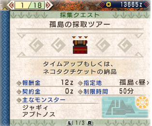 採集點詳細資料：孤島 | ||
| 村★★★ | 1. 孤島的採集任務 | 目標：交納貓票 |
| 自由採集任務，打算回去的時候把藍箱子中的貓票交到紅箱子里即可完成任務回村。想要有一番收穫的話請點選上面的鏈接。 | ||
任務2.凍土的採集任務
 採集點詳細資料：凍土 採集點詳細資料：凍土
| ||
| 村★★★ | 2. 凍土的採集任務 | 目標：交納貓票 |
| 自由採集任務，打算回去的時候把藍箱子中的貓票交到紅箱子里即可完成任務回村。想要有一番收穫的話請點選上面的鏈接。 | ||
任務3.狩獵彩鳥
| 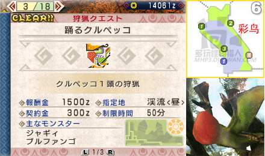 | |||||||
| 村★★★ | 3. 狩獵彩鳥 | 目標：彩鳥x1 | |||||
由村★★的緊急任務演變而來，這回彩鳥的初始地區為6區。
| |||||||
任務4.討伐野豬
| 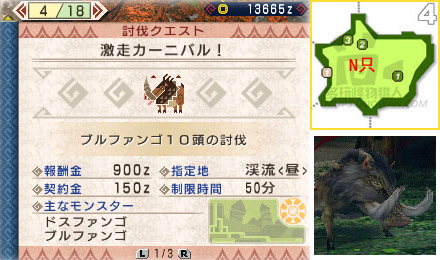 | ||
| 村★★★ | 4. 討伐野豬 | 目標：野豬x10 |
| 4區的野豬很多很多，殺光再換一下區就重新整理了，無需再去其他區找怪。注意有野豬王的騷擾。 | ||
任務5.狩獵土砂龍（關鍵任務）
| 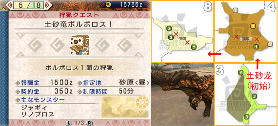 | |||||||
| 村★★★ | 5. 狩獵土砂龍 | 目標：土砂龍x1 | |||||
| 【關鍵任務】 3區觸發動畫，土砂龍出現。在它的左後方進行打擊比較安全，如果不慎被土裹住可以吃消散劑恢復，戰鬥貓有時也會幫主人解困。打到一定程度它會逃往4區和8區吃東西，瀕死時返回3區睡覺。
| |||||||
任務6.狩獵彩鳥
| 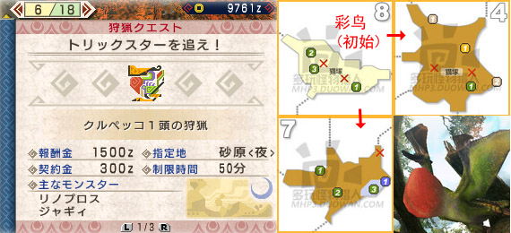 | |||||||
| 村★★★ | 6. 狩獵彩鳥 | 目標：彩鳥x1 | |||||
砂原中的彩鳥初始在8區，常逃往4區和7區（睡覺）。彩鳥本身沒什麼，主要是它在8區能招出土砂龍作為援軍，請善用臭玉熏退其一。（我開始討厭這種崇尚怪多力量大的鳥類了……）
| |||||||
任務7.討伐草食龍
| 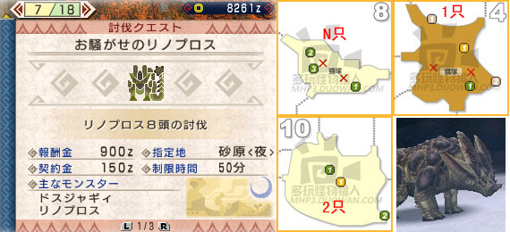 | ||
| 村★★★ | 7. 討伐草食龍 | 目標：草食龍x8 |
| 直奔8區即可，殺完換區回來就會重新整理，每次3只。另有狗龍王出沒注意。 | ||
任務8.收集怪物的肝
| 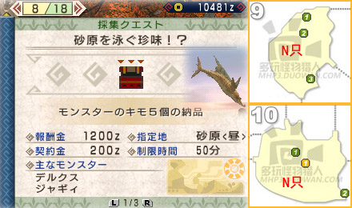 | ||
| 村★★★ | 8. 收集怪物的肝 | 目標：怪物的肝x5 |
| 怪物的肝可以從砂魚身上挖到，建議新手們出發前自帶若干音爆彈，以免補給品音爆彈用光后留下某些痛苦的回憶。砂魚大量出沒在9區和10區，間歇性上跳。利用音爆彈或是其他爆炸物可以把它們炸上來慢慢砍，也可以趁它們例常跳起時進行攻擊吸引其注意力。任務物品出的機率比較小，需要耐心多砍幾隻。 音爆彈合成公式：音爆彈=鳴き袋+爆薬 | ||
任務9.狩獵毒狗龍（關鍵任務）
| 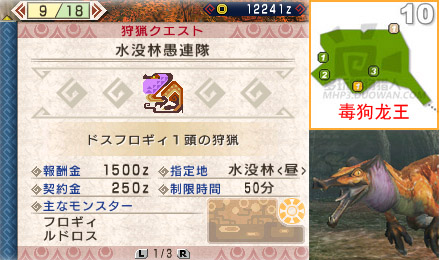 | |||||||
| 村★★★ | 9. 狩獵毒狗龍 | 目標：毒狗龍x1 | |||||
| 【關鍵任務】 新怪毒狗龍在10區閃亮登場，注意它的扭扭甩尾經常是甩兩次。
| |||||||
任務10.狩獵水獸
| 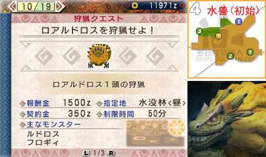 | |||||||
| 村★★★ | 10. 狩獵水獸 | 目標：水獸x1 | |||||
| 【隱藏任務】 本任務為隱藏任務，位列10/19。水獸初始出現在4區。水獸打法可參考此帖視訊：點選檢視
| |||||||
任務11.討伐飛甲蟲
| 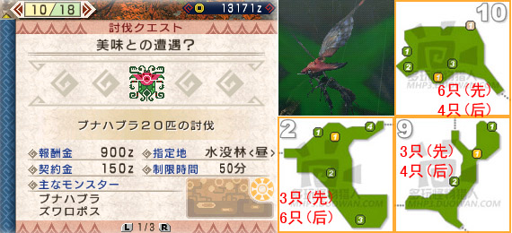 | ||
| 村★★★ | 11. 討伐飛甲蟲 | 目標：飛甲蟲x20 |
| 清理20只飛甲蟲是件很討厭的差事，有興趣的話可以玩些輔助道具，比如毒霧玉之類的。飛甲蟲出沒于3個區，分兩批重新整理。首先清完2區，再清9區10區，當提示還剩10只時後批飛甲蟲將可重新整理。建議路線：②⑨10⑨10 | ||
任務12.狩獵狗龍王
| 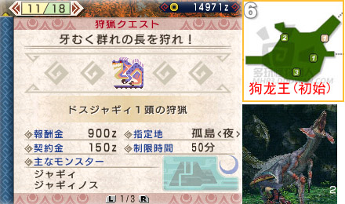 | ||||||
| 村★★★ | 12. 狩獵狗龍王 | 目標：狗龍王x1 | ||||
自溪流、砂原之後，狗龍王又流竄到了孤島。它初始出現在6區，隨後傾向於向7區轉移。它從7區逃跑的話有時會鉆狗洞回6區吃飯睡覺。
| ||||||
任務13.狩獵水獸（關鍵任務）
| 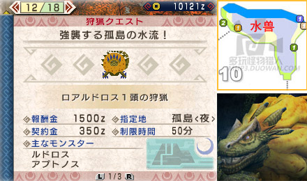 | ||||||
| 村★★★ | 13. 狩獵水獸 | 目標：水獸x1 | ||||
| 【關鍵任務】 水獸在10區登場，主要攻擊方式為各種滾滾功和吐水球，血少時會逃往2區喝水。水獸打法可參考此帖視訊：點選檢視
| ||||||
任務14.討伐水生獸
| 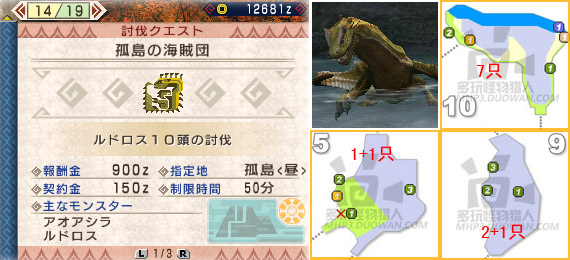 | ||
| 村★★★ | 14. 討伐水生獸 | 目標：水生獸x10 |
| 水生獸出沒地點集中，在⑤⑨10區來回刷刷就OK。青熊獸出沒注意。 | ||
任務15.採集特產蘑菇
| 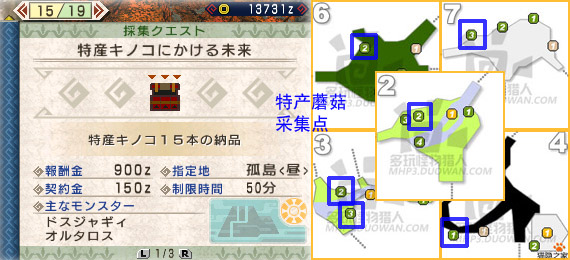 | ||
| 村★★★ | 15. 採集特產蘑菇 | 目標：特產蘑菇x15 |
| 按照以上圖示進行採集即可。狗龍王出沒注意。 | ||
任務16.狩獵野豬王
| 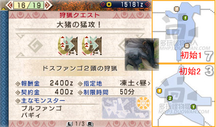 | ||||||
| 村★★★ | 16. 狩獵野豬王 | 目標：野豬王x2 | ||||
兩頭野豬王分別初始在3區和7區，有在5區匯合的趨勢。每隻豬的血量都很少，這任務用來賺錢還不錯的樣子。
| ||||||
任務17.狩獵白兔獸（關鍵任務）
| 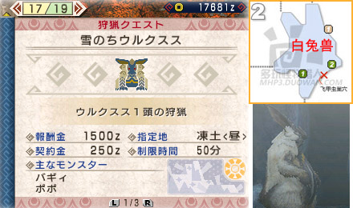 | |||||||
| 村★★★ | 17. 狩獵白兔獸 | 目標：白兔獸x1 | |||||
| 【關鍵任務】 在2區欣賞白兔獸的溜冰動畫（為啥看起來更像灰兔）。白兔獸的攻擊方式有較強的往復性，最好調整視角看看它又想耍什麼花招。
| |||||||
任務18.討伐小眠狗龍
| 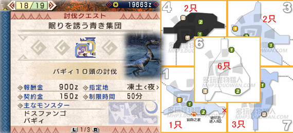 | ||
| 村★★★ | 18. 討伐小眠狗龍 | 目標：小眠狗龍x10 |
| 小眠狗龍分佈很廣，一路砍過去即可。野豬王出沒注意。 | ||
任務19.收集雪山鹿角
| 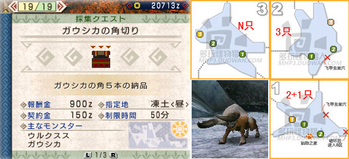 | ||
| 村★★★ | 19. 收集雪山鹿角 | 目標：雪山鹿角x5 |
| 雪山鹿的數量很多，在3區可以反覆換區刷鹿角。白兔獸出沒注意。 | ||
緊急任務.狩獵雌火龍
| 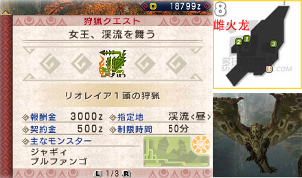 | |||||||
| 村★★★ | 狩獵雌火龍 | 目標：雌火龍x1 | |||||
| 【緊急任務】 8區觸發雌火龍動畫。這傢伙在2G時期被眾獵人刷了無數次，於是奮發圖強……如果被它按倒在地上啃來啃去，快速按鍵和轉動搖桿把下面那個紅條消耗掉即可擺脫，不然會被它使出終結技（據說丟臭玉也可以擺脫啃咬，請試過的獵人回覆下效果哦）。它發怒后的攻擊力是很可怕的，儘量保持滿血狀態，慎防倒鉤和火球。攻擊它的頭部最為有效。
| |||||||
|
| |
| 村長任務1星 - 村長任務2星 - 村長任務3星 - 村長任務4星 - 村長任務5星 - 村長任務6星 - 村長任務7星 |